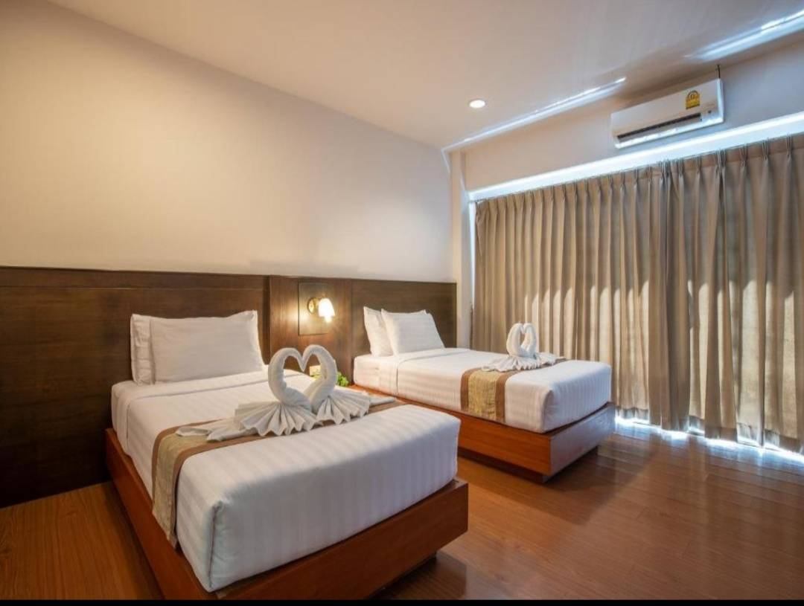
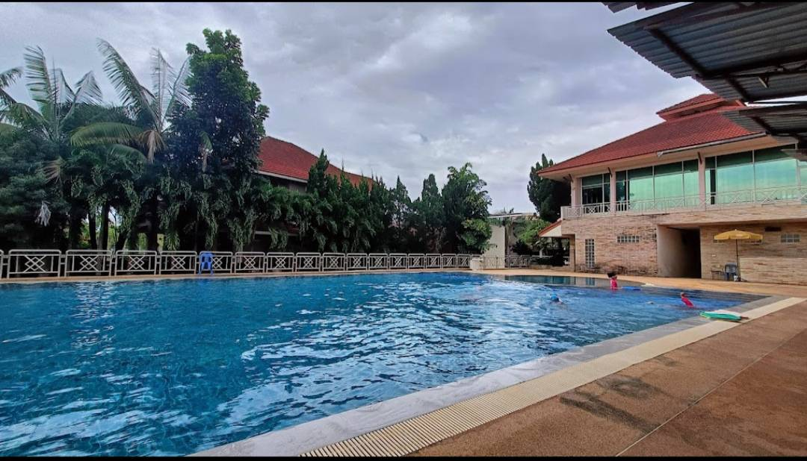
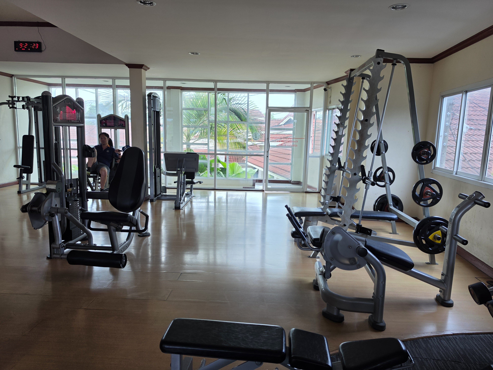
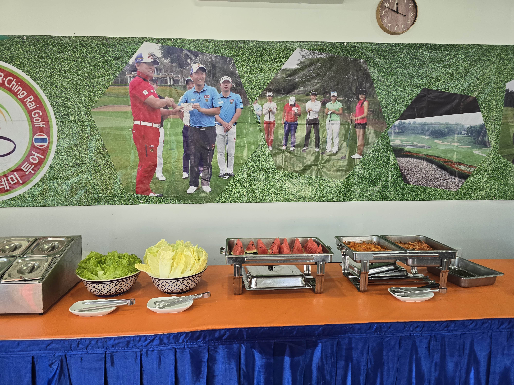
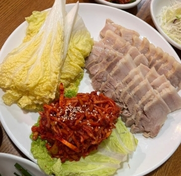

치앙라이 한 달 살기
피만인 기준 · 2인 1실
월 210만 원
- 조식·중식·석식 제공 계획
- 세탁 서비스 포함 계획
- 시내 차량 이용 지원 계획
- 숙박과 일상생활을 결합한 장기 체류
- 골프 라운딩 비용은 별도 확인
기획 가격. 1인 요금인지 2인 합계인지, 객실 유형·차량 이용 범위·식사 방식·세금·보험·항공료 포함 여부를 확정해야 합니다.
머무는 동안 더 깊이 경험하는 태국 북부의 자연과 일상
골프를 즐기는 날과 여행하는 날, 쉬어가는 날을 균형 있게 배치하는 장기 체류 프로그램을 제안합니다. 치앙라이의 사원과 예술, 차밭과 산악 풍경, 골든트라이앵글의 역사를 차근차근 만나보세요.
기존에 정한 기획 가격과 포함 내용을 바탕으로 한 안내
피만인 기준 · 2인 1실
기획 가격. 1인 요금인지 2인 합계인지, 객실 유형·차량 이용 범위·식사 방식·세금·보험·항공료 포함 여부를 확정해야 합니다.
골프일 · 싼티부리 또는 워터포드 라운딩, 휴식과 저녁 식사
관광일 · 백색사원·청색사원·예술관광 또는 도이퉁·골든트라이앵글
휴식일 · 카페, 현지 시장, 마사지, 가벼운 산책과 자유 일정
요일별 운영과 차량 제공 범위는 확정된 상품 조건에 맞춰 조정합니다.
동선이 비교적 단순해 한 달 살기 중 하루를 활용하기 좋은 코스
치앙라이를 대표하는 독창적인 백색 건축과 예술 작품 감상. 비교적 이른 시간 방문을 권장합니다.
이동 동선을 고려해 식사 장소를 선택하고, 무리하게 관광지를 늘리지 않습니다.
강렬한 푸른 색채와 장식이 인상적인 사원을 둘러봅니다.
예술에 관심이 많다면 반담 박물관, 넓은 자연 공간을 선호한다면 싱하파크를 선택합니다. 두 곳 모두 넣기보다 취향에 맞춰 하나를 고르는 편이 여유롭습니다.
추천 동선이며 입장 시간·휴무일·차량 상황에 따라 조정합니다. 태국 관광청의 치앙라이 명소 안내를 참고했습니다.
산악 경관과 메콩강의 역사적 풍경을 함께 만나는 북부권 코스
산악 풍경과 정원을 감상합니다. 고지대 이동이 포함되므로 출발 시간을 넉넉하게 잡습니다.
도이퉁에서 골든트라이앵글 방향으로 이동하며 쉬어갑니다.
태국·라오스·미얀마가 만나는 접경 지역을 메콩강 전망과 함께 감상합니다. 세 나라가 보인다는 것과 실제 세 나라에 입국하는 것은 다릅니다.
시간이 허락하면 란나 역사와 연결되는 치앙센 지역을 둘러보고 귀환합니다.
북부권 이동 거리가 있어 당일 상황에 따라 방문지를 줄일 수 있습니다. 태국 관광청의 북부 관광 동선을 참고했습니다.
태국 · 라오스 · 미얀마, 국경 조건에 맞춘 별도 상담 상품
10만 원은 기존 구상 금액이며, 3개국 입국·비자·국경 이동·가이드·식사·입장료를 모두 포함하는 확정 판매가가 아닙니다. 원가 확인 후 확정해야 합니다.
태국 내 골든트라이앵글 관광: 태국 영토에서 접경 전망을 보는 일정으로, 국경 통과가 필요하지 않습니다.
라오스 방문: 치앙콩·후아이싸이 국경 등 입국 가능 경로, 여권·비자·출입국 수속을 개별 확인합니다.
미얀마 방문: 매사이·타칠렉 국경의 관광객 통과 가능 여부와 여행경보를 우선 확인합니다. 확인 전에는 방문을 확약하지 않습니다.
여권 국적, 비자 상태, 출입국 횟수, 여행 날짜에 따라 조건이 달라집니다.
숙소 주변과 시내, 식당, 시장, 카페를 익히고 가벼운 골프 라운딩으로 여행 리듬을 만듭니다.
백색사원·청색사원·반담 박물관·싱하파크 중 취향에 맞는 코스를 선택합니다.
도이퉁과 골든트라이앵글, 치앙센 등 북부권을 여유롭게 둘러봅니다.
좋았던 골프장을 다시 방문하거나 자유 관광, 휴식, 쇼핑으로 마무리합니다. 정해진 단체 일정이 아닌 고객 맞춤형 예시 일정입니다.
직접 촬영하거나 사용 허가를 받은 사진을 추가하면 자동으로 표시됩니다.






